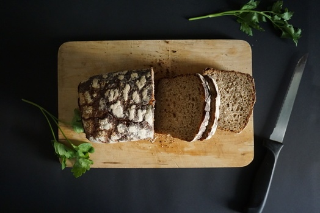

Bacon ipsum dolor amet biltong shank brisket chuck chicken pig pork fatback tongue ground round short ribs picanha ball tip jowl. Turkey landjaeger beef short loin doner. Capicola porchetta pastrami fatback pig, ground round chicken ribeye biltong meatball t-bone doner.